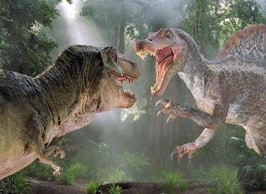

Os tiranossauros possuíam cerca de 12 metros de comprimento, 3,65 metros de altura e podiam pesar oito toneladas. Sua cabeça do tiranossauro media mais de 1,5 metro. Possuía mandíbulas poderosas, sendo considerada a mordida mais forte entre todos os animais que já existiram no planeta.
Há mais de 95 milhões de anos, um portentoso sistema de rios corria pelo que hoje é o Saara marroquino, fornecendo um lar para um dos dinossauros mais incomuns conhecidos pela ciência: o espinossauro, uma besta de 15 metros de comprimento e 7 toneladas com um focinho de crocodilo repleto de dentes afiados.
